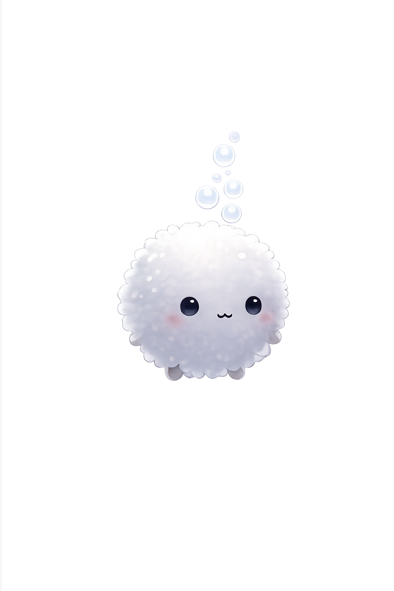
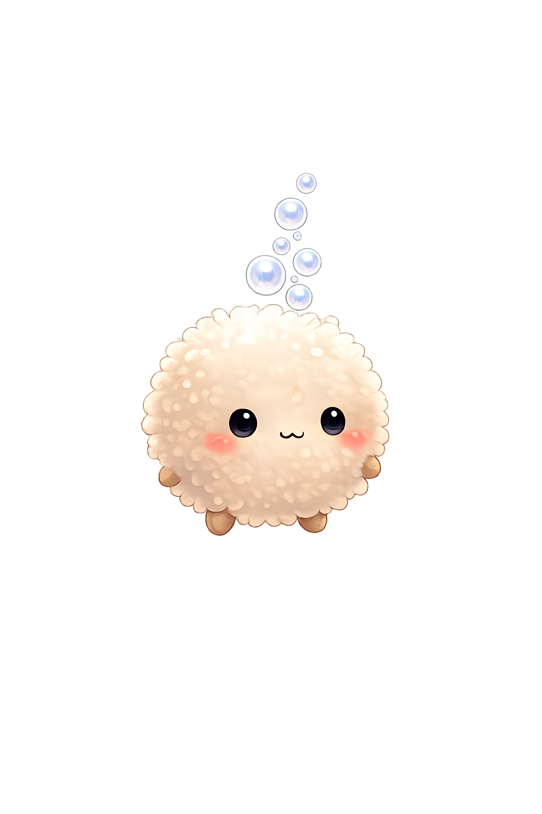

深度
0m
最高
0m
真珠 今回
0
真珠 通算
0
⌂
II
ゆったり
深海さんぽ
泡のモフを左右に流して、横長クラゲでぽよん。大クラゲの真珠も集めよう。
どちらのモフであそぶ？

グレー

ベージュ
さんぽを始める
図鑑
深海ずかん
0〜300m
301〜500m
501〜1000m
特別
タイトルに戻る
🌊
ゲームオーバー
深度 0m
もう一度
タイトルに戻る
‹
›
×
新しい生き物を発見しました
？